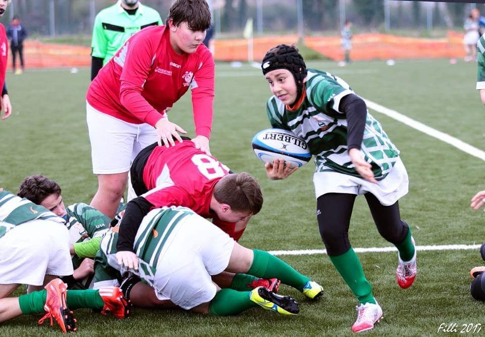
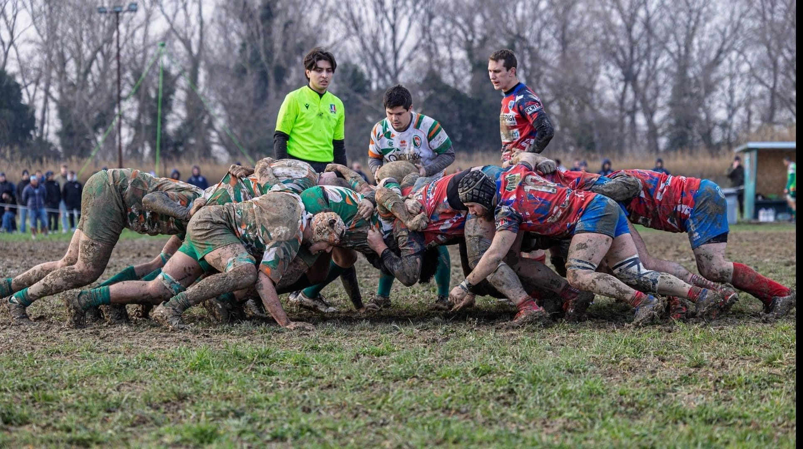

Chi sono
Mi chiamo Campolucci Filippo, ho 20 anni e frequento il quinto anno dell'ITIS ad indirizzo informatico.
📌 Passioni & hobby
Rugby
Pratico rugby da quando avevo 11 anni. I miei compagni di squadra sono per me come una seconda famiglia. Ho giocato come terza linea praticamente durante tutta la mia carriera agonistica, grazie al mio modo di placcare un po’ "matto".
La particolarità del rugby è data dal fatto che quando si passa la palla, la si deve passare all’indietro. Questo all'inizio mi disorientava e pensavo: "ma per quale motivo devo passare la palla all'indietro per andare avanti?" e infatti non la passavo quasi mai.
Ciò che mi piace maggiormente nel rugby è correre, correre con la palla in mano verso la meta, lasciare dietro di me gli avversari “bombati” e nelle touche essere sollevato in aria..
Nonostante sia uno sport molto divertente, nel mio caso però il rugby è stato molto impegnativo a livello fisico. Infatti, nel corso della mia carriera rugbistica ho subito diversi infortuni importanti, tra cui la rottura del crociato e del menisco, la frattura scomposta di ulna e radio e la lesione di un legamento della spalla.
Ma in fondo amo troppo questo sport per lasciarmi fermare dagli infortuni.


Palestra
La palestra è il mio secondo hobby. Ho iniziato a frequentarla solo perché mi era stato imposto dal mio preparatore atletico, ma con il passare del tempo ho capito che senza allenamento non sarei mai diventato un vero atleta. Ormai mi alleno in maniera seria da quasi due anni e ogni giorno cerco di superare i miei limiti rispetto alla settimana precedente. Sollevare pesi per me non è solo un esercizio fisico, ma rappresenta disciplina e un modo per sfogarmi oltre al rugby.
Montagna
Fin da piccolo le mie vacanze preferite sono state quelle trascorse in montagna. Mi piace fare trekking sia in estate che in inverno.
Personalmente sono stato fortunato perché anche i miei genitori amano la montagna e per questo nel 2013 hanno comprato casa in Trentino Alto Adige, rendendo le vacanze molto più piacevoli e comode.